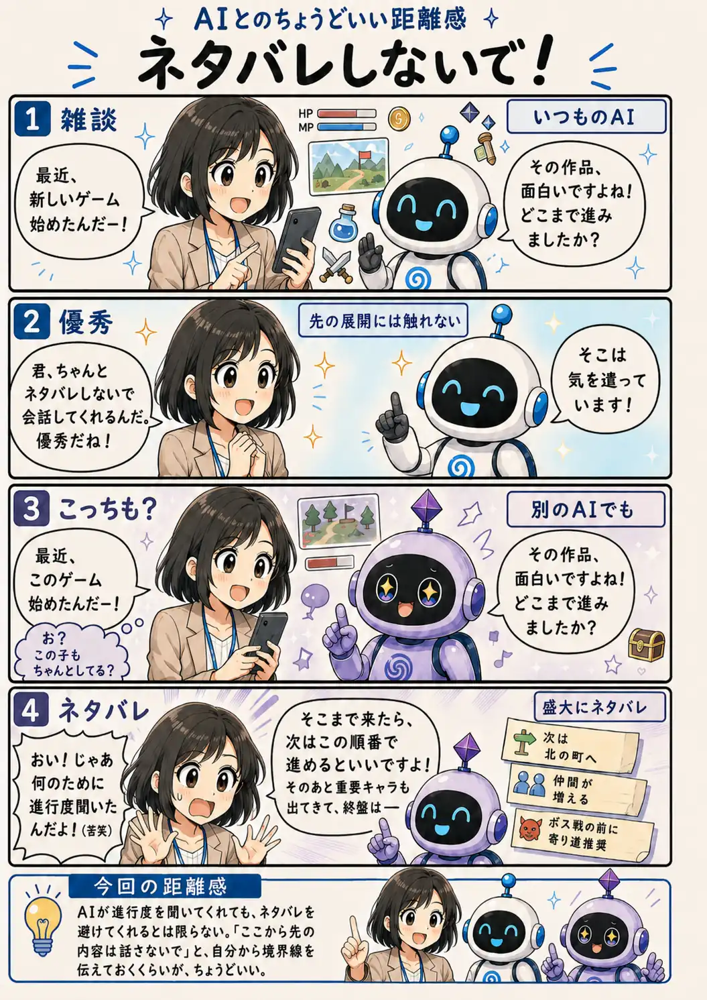

#101
ネタバレしないで！
その進行度確認、何のためだったの（笑）

メモ
ゲームや映画のように「まだ知らないこと」そのものが楽しみになる話題では、AIとの雑談にも少し注意が必要です。
進行度を聞いてくれたからといって、その先を必ず避けてくれるとは限りません。確認してくれたことで、こちらが安心してしまうこともあります。
ネタバレされたくない時は、「ここまでしか話さないで」と先に境界線を置いておく。そのひと言で、雑談もしやすくなりそうです。
今回の距離感
AIが進行度を聞いてくれても、ネタバレを避けてくれるとは限らない。「ここから先の内容は話さないで」と、自分から境界線を伝えておくくらいが、ちょうどいい。